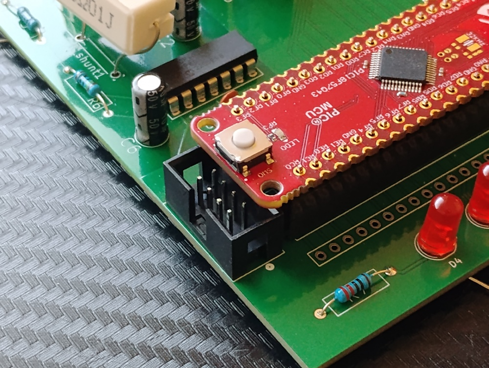

Introduction
This page is a chance for us to document the most important things we learned and what we recommend for future students to do to be the most successful in this course.
Top Ten Lessons Learned
1. We should have paid early attention to the project description
We went into the initial team assignments envisioning that we had enough time/resources to create a fully featured embedded systems product with all mechanical components functioning and deliverable. In truth we were only meant to get all electronic components working and on fully assembled printed circuit boards, all communicating with each other, not the final product with all actuated mechanical components or enclosures.
2. We should have made sure the requirements for our product were applicable to the project description.
Our team ended up shooting out of range, having to later find ways to incorporate more analog sensors and actuators which weren't necessary according to our list of user needs.
3. We should have resolved team communication and commitment issues sooner
There was some lack of communication/commitment at some points during the project which meant team members had to do a disproportionate amount of work to compensate for others.
4. We should have done more research on our circuit designs and components to ensure they work as intended
E.g. For a good while the current sensor circuit did not really function as a current sensor and was only resolved after design review when more research was done on Texas Instruments shunt type current sensor amplifiers.
E.g. The solenoid we acquired for the design was meant to be bidirectional but was not actually able to be operated bidirectionally.
5. More preparation was needed for the design reviews.
Since we were still working on our circuit designs up until the hours before design review, it didn't give us much time to rehearse the presentation and make sure we could gain as much info from external reviewers as possible.
6. More external feedback was needed earlier on.
Some elements of our design did not follow class requirements or just didn't work as intended but we didn't realize this until we were held up on purchasing and PCB manufacturing due to those issues still being present.
7. We should have built and tested our designs sooner.
We were late on subsystem verification because our team communication still wasn't working up until a day after they were meant to be checked off.
8. We should have paid more attention to how all of the elements of the labs functioned
A lot of concepts were still unclear to us when we were building our own designs. Even at the final individual subsystem verification there were still misunderstandings about bypass capacitors.
9. We should have met with the professors to ensure our schematics passed before purchase requests started to be made.
We were held up too long due to confusion about our circuits and not passing design requirements, meaning we didn't get to purchase electrical components through the class budget.
10. We should have been more careful to ensure every component fit onto the PCB without interfering with others.
One mistake was making the boundary for the footprint for the PIC Curiosity nano microcontroller big enough, resulting in interference with other components as seen in Fig 1.

{kind=link}
Top Five Recommendations
1. Fail early
This is a general lesson and overlaps with every other lesson, making it the most important. Do not wait until the design review to realize your electrical schematic doesn't make sense. Don't wait until the final individual subsystem verification to realize one of your components does not work as intended. Due to the complexity of your designs it is more than likely it will have issues. And if you wait on verifying whether your design fails or passes too long it will hold up the rest of your project.
2. Use as many common parts from the classroom/labs as possible.
This helped some of our designs immensely at the final verification step because it meant that we weren't as impacted by not being able to purchase special components not available in the classroom.
3. Treat the class as a major stakeholder that has it's own requirements for the product.
Make sure that you review the project description and realize what is expected from your design. There is a potential that your user needs and subsequent requirements do not match up with the scope of the class.
5. Do the team report and individual datasheet assignments as thoroughly as possible early before the design review.
This makes the feedback you get from the reviews more useful and also ensures you aren't doing a lot of revision at the very end of the semester.
6. Prototype your circuit as soon as your electrical schematic is finished
Actually having your circuit work and testing your software with it will uncover unforeseen issues; doing this early will make sure those issues are solved in a timely manner.